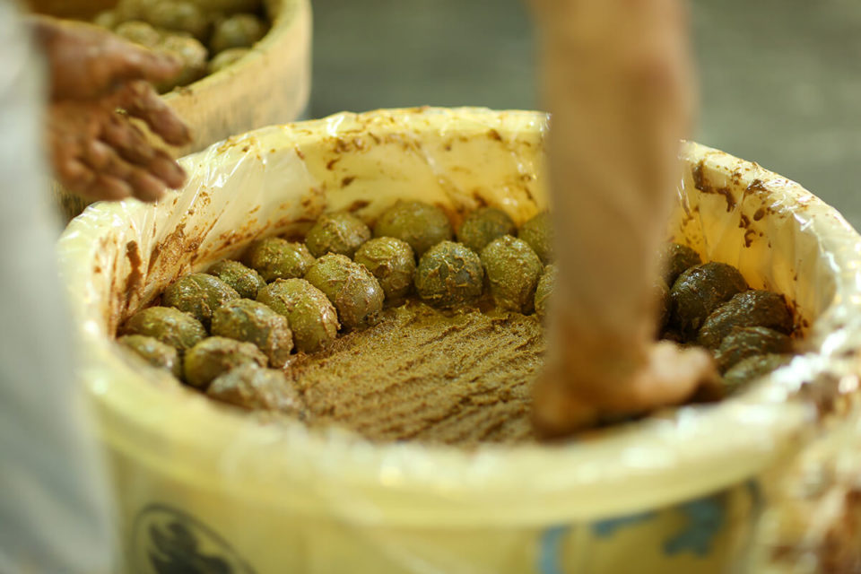
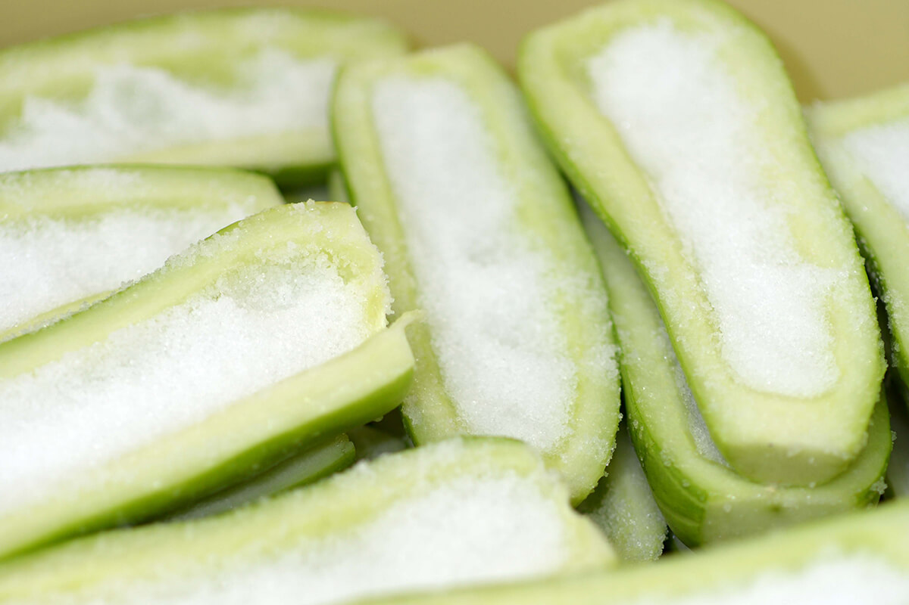
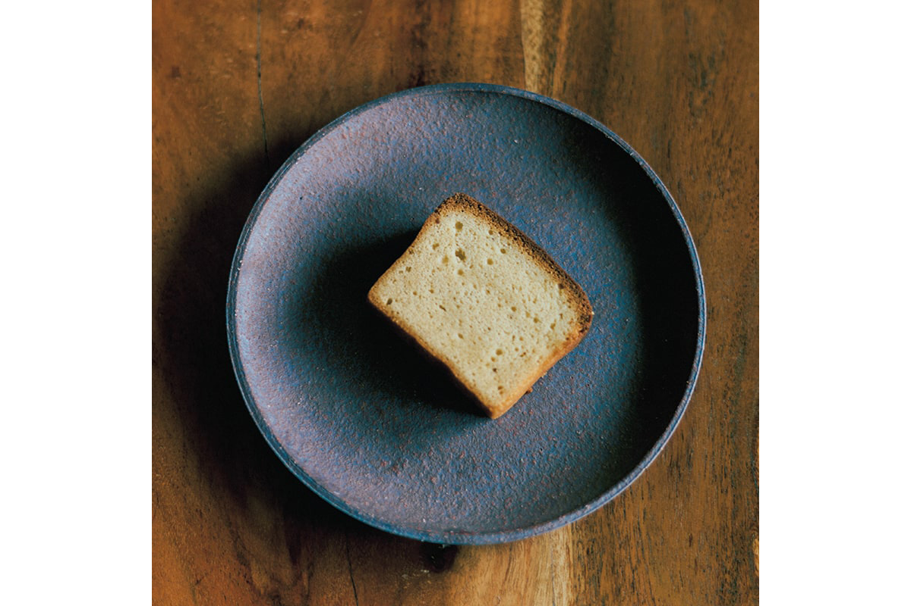

Префектура Нара · Нара и Ёсино · еда
Нарадзукэ и кудзу из Ёсино: два вкуса Нары, которым нужно время

Нара гордится двумя продуктами, у которых главный ингредиент это время. Нарадзукэ, овощи в сакэ-касу, выдерживают около года, а порошок кудзу из Ёсино промывают и сушат месяцами. О них рассказывают люди, которые хранят оба ремесла.
Лавка
«Мори Нарадзукэ»: у ворот Тодайдзи с 1869 года
Ни одна поездка в Нару не обходится без храма Тодайдзи. По дороге к нему тянутся сувенирные лавки, и там, где их ряд заканчивается, стоит «Мори Нарадзукэ», старейшая лавка соленьев у храма.
Торговать здесь, похоже, начали ещё в эпоху Эдо, но документы сохранились только с 1869 года, поэтому отсчёт ведут от него. Раньше лавка стояла на территории самого храма, между Великими южными воротами и средними воротами перед залом Великого Будды. Когда в 1942 году храмовую землю приводили в порядок, её перенесли на нынешнее место. Об этом рассказывает Сигэру Мори: он был четвёртым хозяином лавки, а в 2020 году, уже председателем компании, по-прежнему сам работал с соленьями.
«Мори Нарадзукэ»
- Адрес
- префектура Нара, город Нара, Касуганотё, 23
История
Соленья, которым больше 1300 лет
История нарадзукэ уходит в глубь веков больше чем на 1300 лет. Рядом с развалинами дворца Хэйдзё, столицы VIII века, нашли деревянные таблички из усадьбы принца Нагаи (684–729), внука императора Тэмму и одного из самых влиятельных людей своего времени. На этих табличках уже упоминаются овощи в сакэ-касу.
Под собственным именем нарадзукэ впервые появляются в дневнике придворного рода Ямасина за 1492 год. Там записан список подарков, привезённых из Удзи: бочонок нарадзукэ, бочонок суши с форелью и чаша клейкого риса.
В эпоху Эдо лекарь китайской медицины Сосэн Итоя, живший в Наре, начал продавать маринованную в сакэ-касу белую дыню под названием «нарадзукэ». Соленья стали подносить сёгунату, и слава о них разошлась по стране, а со временем их полюбили и простые горожане.
Ремесло
Год в четырёх слоях гущи
Нарадзукэ это овощи, чаще всего дыня или огурец, выдержанные в сакэ-касу, гуще, которая остаётся после отжима сакэ. Как именно их делают, знают немногие. Сначала овощи солят.

Гущу от сакэ тоже нельзя пустить в дело сразу. Её закладывают в огромные чаны, два метра в диаметре и два в высоту, и плотно утаптывают. Так она лежит примерно полгода, до середины лета, около 20 июля. Потом смешивают несколько видов гущи, и только после этого в неё можно класть овощи.
Засоленные овощи проходят четыре ступени: ситадзукэ, накадзукэ, увадзукэ и хондзукэ. Для первой берут гущу, оставшуюся после второй, для второй гущу после третьей, а на третьей и четвёртой ступени овощи кладут в свежую. Каждая смена гущи вытягивает из овощей соль и одновременно придаёт им вкус. До готовности проходит около года.
Многое зависит и от погоды, поэтому каждая партия получается немного другой. Труднее всего третья ступень, увадзукэ: здесь мастер решает, сколько гущи взять и в какой пропорции смешать разные виды.
«Говорят: вложить труд и время. Труд это руки мастера, а время это долгие месяцы ожидания. На этих двух вещах нарадзукэ и держатся»
Сигэру Мори
Кроме дыни в лавке маринуют огурцы, арбузы, имбирь и тыкву-горлянку. А ещё Сигэру Мори вернул к жизни огурец «ямато сансяку кюри», то есть «трёхфутовый огурец Ямато», один из традиционных овощей Ямато, который был на грани исчезновения. Он начал выращивать его на собственном огороде и восемь лет подбирал способ, пока в 2006 году соленья из этого огурца не появились в продаже.
Нарадзукэ в Наре делают многие, и у каждой лавки свой вкус. Нарадзукэ «Мори Нарадзукэ», сделанные по старинному способу, стоит попробовать самому.
Кудзу
Корень, который ждёт три года
Чем вы загущаете соус? Крахмалом, картофельным или кукурузным? В Японии с древности для этого служил порошок кудзу, о котором сегодня многие забыли.
Кудзу это вьющееся бобовое растение, родственник сои. В конце лета оно цветёт красно-фиолетовыми гроздьями, и эти цветы воспевали ещё в «Манъёсю», древнейшей антологии японской поэзии VIII века. Порошок делают из корней, которые растут около трёх лет, и работа эта долгая и кропотливая. Поэтому кудзу стоит дорого и дома его используют всё реже, хотя возможностей у него много.
Само слово «кудзу», как считают, пошло от местности Кудзу в верховьях реки Ёсино. Это древнее название встречается и в «Нихон сёки», летописи VIII века, и в «Манъёсю», а жителей здешних гор тоже называли людьми кудзу. Видимо, они первыми узнали о пользе корня и стали употреблять его в пищу.
Записей о том, что в древности из корня делали порошок, нет: скорее всего, его ели проще. Настоящее производство началось в эпоху Эдо, когда агроном с Кюсю Нагацунэ Окура (родился в 1768 году) написал трактат «Сэйкацуроку» о том, как очищать кудзу, и способ разошёлся по стране. Кудзу растёт повсюду, и свои сорта есть в разных префектурах, от Мияги на севере до Фукуоки на юге, но самый знаменитый из них кудзу из Ёсино.
Способ
Белый порошок из горной воды
У производства кудзу много общего с горным делом: их места часто соседствуют, инструменты похожи, а умение копать глубокие ямы пригодилось и там и там. Возможно, кудзу помогал горнякам восстанавливать силы.
Корень разбивают до волокон, а полученный крахмал снова и снова промывают водой. Этот способ называют «ёсино-сараси», и его хранят с эпохи Эдо. Воды нужно очень много, и она должна быть чистой, поэтому горы Ёсино с рекой Ёсино и стали главным краем кудзу.
За две недели или месяц крахмал становится белоснежным и слипается в плотную массу. Её нарезают кусками и около трёх месяцев сушат на холодном зимнем ветру, и только после этого порошок готов.
Кудзу загущает соусы, из него делают кудзукири, кудзумоти и кунжутный тофу гома-дофу. Когда-то кудзу называли и крахмал из батата, и этот обычай отчасти сохранился. Поэтому порошок только из корня кудзу называют «Ёсино хонкудзу», настоящим кудзу из Ёсино, а смесь с другим крахмалом просто «Ёсино кудзу».
Производитель
«Иноуэ Тэнгёкудо»: новые рецепты для старого корня
«Настоящее кудзу из Ёсино это продукт, которым Нара может гордиться. Я хочу, чтобы люди снова с ним подружились»
Адзуми Кавамото
Адзуми Кавамото работает в компании «Иноуэ Тэнгёкудо», основанной в 1870 году, и носит звание сомелье кудзу. Она много сил отдаёт просвещению, например приходит с уроками в начальные школы.
Корень кудзу давно известен как лекарственное сырьё: в Японии почти все слышали о средстве от простуды какконто, отваре на основе этого корня. В кудзу много изофлавонов, и от них ждут пользы при климаксе и для профилактики остеопороза. А высушенные цветы кудзу, если заварить их кипятком, говорят, помогают от похмелья.

«Кроме рулетов и кексов из чистого кудзу, людям нравится соевый йогурт на молочнокислых бактериях, выделенных из корня кудзу. Если предлагать новые способы есть кудзу, его полюбит и следующее поколение»
Адзуми Кавамото
Чем глубже копаешь, тем больше находишь: это верно и для самого корня, и для кудзу из Ёсино в целом. Не стоит отказываться от него из-за цены или хлопот, его стоит хотя бы раз попробовать.
«Иноуэ Тэнгёкудо», главный магазин в Наре
- Адрес
- префектура Нара, город Нара, Осиагэтё, 1-6
- Телефон
- +81 742-27-5011
- Часы работы
- 10:00–19:30
- Выходные
- вторник (если это праздник, то следующий день)
- Сайт
- kudzu.co.jp
Фото: Кадзумаса Харада.